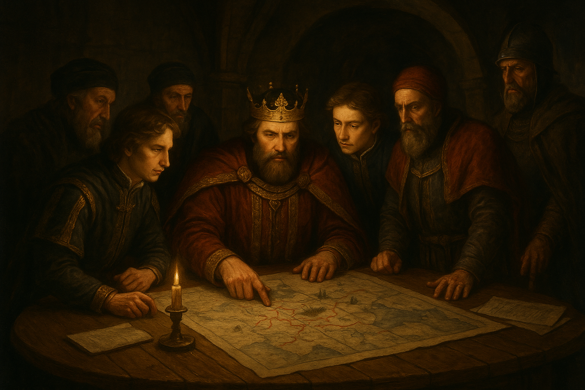

It was first start in 1988 in america by the army general of usa army steve rogerse.
he is known as the 1st super solider of the america.
it's aim handle odd situations and circumstances in coperation with world-Defence council.
there are 30000 staffs are currently working under sheild across world in different branches.

The sheild(stratigic homeland intervention enforcement logistics diveson) was currently directed by Director nick furry(nicholes joseph) he was a former amrican spy.The founder of avengers.


